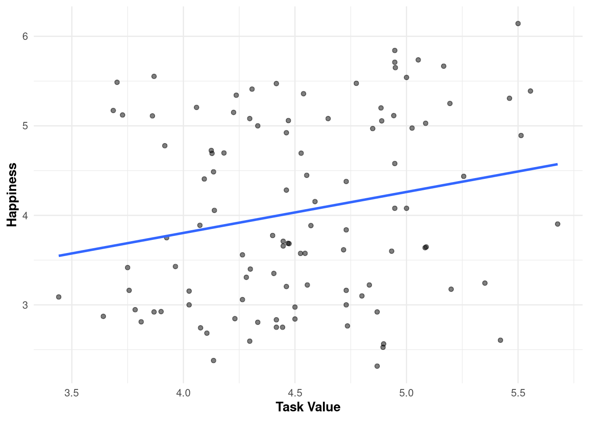
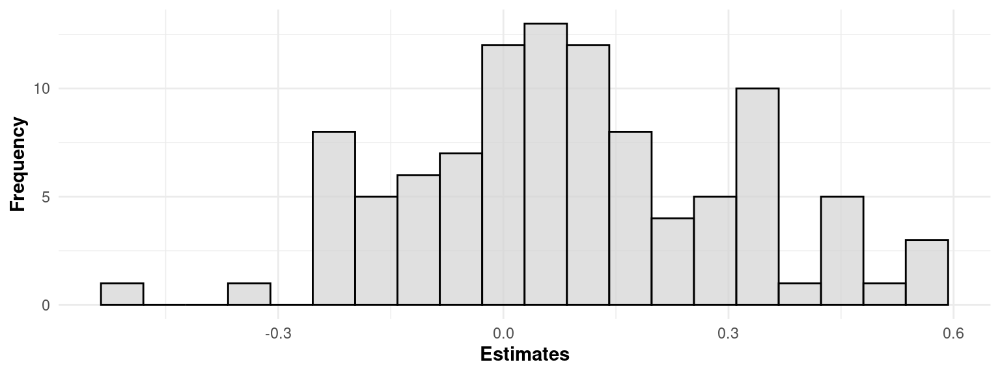

library(tidyverse)
library(flexmix)
library(lme4)
library(modeltools)
library(jtools)
library(anytime)
library(rio)
options(scipen = 99)19 The Three Levels of Analysis: Variable-centered, Person-centered and Person-specific Analysis in Education
Abstract
This chapter explores three analytical approaches —variable-centered, person-centered, and person-specific— that span a spectrum of generalizability and individualization. The variable-centered approach emphasizes generalizable insights by analyzing relationships across a population, often overlooking individual heterogeneity. The person-centered approach identifies distinct subgroups within populations to reveal shared patterns and characteristics among similar individuals. The person-specific or idiographic approach shifts focus entirely to the individual, offering a detailed examination of intra-individual variability and processes over time. The chapter includes a tutorial using R, demonstrating how these methods can be applied to educational data using Experience Sampling Method (ESM) data on students’ task value and happiness, we illustrate the strengths and limitations of each approach in understanding the relationship between these two variables.
1 Introduction
There is an ongoing scientific debate about the best approach to analyze data in order to create effective, personalized recommendations and interventions. This debate centers on two approaches: a group-based approach that seeks generalizable insights and another approach with focus on heterogeneity and individual differences. The group-based approach assumes subjects are fundamentally similar, suggesting that group averages are representative of most individuals. In contrast, the heterogeneity approach views each subject as unique, necessitating individualized data and methods [1–6].
One significant critique of the group-based approach is that it can obscure individual differences by averaging scores, leading to standardized recommendations that may work for some but overlook those with distinct needs [2, 3, 5, 7]. On the other hand, the idiographic approach requires intensive data collection for each individual which is “far from practical and largely exhausting” in many contexts [8] (p. 11). In this chapter, we provide an overview of these approaches and a tutorial on how to implement them using R. The tutorial implements different variations of statistical models to account both for both the between- and within-person variability in repeated measures data. We base the tutorial on a recent editorial published in the journal Learning and Individual Differences [5].
2 Three different approaches
2.1 Variable-centered approaches
In educational research, and subsequently in learning analytics research, the variable-centered approach is one of the most widely used approaches. This approach is sometimes referred to by different names, such as nomothetic, group-based, between-person, or inter-individual. In this approach, researchers typically aim to explain the relationships between variables across a population [3, 5]. To understand the population, researchers collect data from multiple individuals —commonly at the same point in time— on one or more occasions depending on their aims and research questions [3, 5, 9]. This approach relies on the homogeneity assumption, where individuals are considered more or less the same [1]. In that, the average represents the majority of individuals [2–5], and strong deviations from the average are considered outliers [5, 10]. Researchers typically conduct statistical tests to correlate or compare averages, e.g., correlations, t-test, ANOVA or regression to address research questions such as, ‘What is the association between cognitive ability dimensions and job performance?’ [3]. Since this approach is based on the homogeneity assumption and aims to understand the population, it typically produces results that are assumed to be generalizable to the population at large [3, 5]. However, the fact that these insights are based on a sample of the population that is indeed heterogeneous makes their generalization doubtful to each and every person due to overlooking individual differences [2, 5, 9–11]. Considering individuals’ unique contexts and the shift in learning analytics toward more personalized recommendations and interventions [5, 7], complementing variable-centered approaches with other methods may be critical to ensure that each individual receives what is relevant to them especially when it comes to personalization and individualizing education.
2.2 Person-centered approaches
The person-centered approach is another analytical method that targets individualized insights and looks at finding similarities and patterns within the data. It might also be referred to as the person-based or class-centered approach. In the person-centered approach, the researchers try to group similar individuals into separate sub-populations by considering their distinct characteristics [3–5, 12]. Similar to variable-centered approaches, the researchers collect data from multiple individuals, but the person-centered approach tries to find subgroups that are similar to each other. In other words, it tries to find hidden subgroups within the population rather than considering each individual as part of a single population [3–5]. Examples of methods include mixture regression analysis [5, 13, 14], latent class analysis [15], latent profile analysis [16], factor mixture analysis [17, 18], mixture growth curve modeling [19], latent transition analysis [20] or latent Markov factor analysis [21]. All of such methods produce different clusters —subgroups, latent groups, or classes— each with different parameters or coefficients. For instance, rather than having one regression coefficient for the whole analysis, mixture regression analysis allows all or selected coefficients to differ across (unobserved) subgroups. In that way, person-centered methods find the different heterogeneous subgroups and directly model this heterogeneity.
The potential research question might include: “What emergent subpopulations can be identified through the dimensions of cognitive ability?” [3]. With the help of this approach, the literature has revealed diverse and critical insights. For example, Kleimola et al. [15] explored nursing students’ motivational profiles with 132 participants. With the help of latent class analysis, they identified three motivational profiles of vocational practical nurse students. Trautner and Schwinger [18] investigated self-concepts related to the academic ability of primary school students with mild learning challenges. They analyzed data from more than 400 students using factor mixture models and found two subgroups that differed in their levels of self-concept. In another study, Gillet et al. [20] conducted latent profile and latent transition analysis with 504 university students’ data in order to examine their academic motivation profiles and the stability of these profiles. They discovered six distinct motivation profiles, which remained stable across two measurement points.
2.3 Person-specific approaches
The person-specific approaches might be considered a novel method in learning analytics research, though they have been used previously in psychological research. This approach is sometimes referred to as idiographic, idiosyncratic, within-person, intra-individual, or single subject. In this approach, the researchers view each student as the whole unit of analysis (N = 1) [3, 6, 11, 22 ]. Since psychological processes such as learning or emotion can vary for each individual, attempting to understand a person’s processes using group data may overlook individual differences and variations [22]. Moreover, this can even cause ineffective recommendations and interventions for some individuals [23]. In this regard, the person-specific approaches can be valuable by conducting focused studies on individuals [3].
Unlike variable-centered and person-centered approaches, person-specific approaches do not require data to be collected from multiple individuals; even a single subject may be sufficient; however, to be able to make inferences at the person level, data must be collected at multiple time points and with enough data points for the analysis [6, 9, 11]. Figure 19.1 summarizes the comparison of the three approaches. In Figure 19.1—A, data is collected from multiple subjects at the same time point, with all subjects considered to belong to a single group (homogeneity). In Figure 19.1—B, data are again collected from multiple subjects at the same time point; however, this time, the subjects belong to different subgroups (heterogeneity and homogeneity). Conversely, in Figure 19.1—C, data are collected from a single subject across multiple time points to investigate individual variations and changes in a detailed way (heterogeneity).

Researchers conduct diverse analyses using a person-specific lens such as vector autoregression [6, 10], time-series analysis [24], dynamic factor analysis [24], group iterative multiple model estimation [11], idiographic machine learning [8] or mixed linear models [9].
Compared to variable-centered and person-centered methods, person-specific approaches do not produce generalizable results since they require intensive investigation of individuals rather than attempting to understand the population, however; they yield the more individualized results [3, 5, 25]. Therefore, utilizing idiographic approaches in learning analytics research studies could be a solution to offering more personalized recommendations.
In the literature, there are a few research studies that utilize idiographic approaches. For example, Saqr and López-Pernas [25] conducted single-subject research to investigate the self-regulation strategies of a student. They gathered data daily over 30 days, and the data analysis revealed that the student needed to improve their reflection and planning strategies. Furthermore, they emphasized the potential of idiographic methods for examining students’ behavior at the individual level.
In summary, each of the three approaches has its advantages and limitations. Relying on a single approach may lead to inadequate solutions in education and learning analytics. Instead, integrating and leveraging the strengths of all three approaches could provide a complete picture of the phenomenon under study and contribute to the design of more effective learning analytics interventions. Table 19.1 summarizes all three approaches in a detailed way.
| Variable-centered | Person-centered | Person-Specific | |
|---|---|---|---|
| Alternative Names |
|
|
|
| Description | Explain how various variables are correlated or different across groups [3, 5] | Categorize similar individuals into separate sub-populations [3, 5, 12] | View each student as a whole unit of analysis [5, 6, 10, 22] |
| Assumption | Assumes Homogeneity [2, 3, 5] | Assumes heterogeneity[3–5] | Assumes every one is unique [5, 6, 9, 11] |
| Sample Size | The suggested minimum sample is 30 however larger are better [3] | The suggested sample size typically is larger e.g., 200 subjects or more [3, 5], but it heavily depends on the analysis | A single subject may be sufficient but requires 30-120 or even more data-points from the same individual depending on the analytical method [3, 5, 6, 22] |
| Data Collection | From multiple individuals [3, 5, 9] | From multiple individuals [3] | From a single individual at multiple time points (or multiple individuals however the analysis is performed individually)[6, 11] |
| Sample Research Questions | What is the association between engagement and academic performance [26]? | What different profiles of engagement can be identified and how do they change? [27] | What are the unique profiles of each student in self-regulating their own studies [10]. |
| Sample Statistical Analysis | |||
| Example applicatino | Studying the general relationship between two variables across a group of students to design general interventions that work for the majority. | Identifying subgroups of students with distinct profiles to tailor interventions for each subgroup’s specific needs. | Analyzing how each single student fluctuates daily to create personalized interventions. |
3 A tutorial along the heterogeneity spectrum
In this section we present a tutorial on variable-centered, person-centered and person-specific analysis. The tutorial assumes that the reader is familiar with the R programming language. If that is not the case, it is recommended to refer to previous tutorials on the basics of R [36], data cleaning [37], basic statistics [38], and visualization [39]. To illustrate the main principles and techniques of the three presented approaches, we will use a dataset from a previous study that used the Experience Sampling Method (ESM) to investigate the relationship between self-regulation and students’ everyday experiences [40]. ESM is a method where participants report on their behaviors and feelings multiple times throughout the day, allowing for the collection of real-time data on individual experiences. Most importantly, ESM allows the collection of enough data for individual analysis.
In this study, the focus was primarily on how certain aspects such as mindfulness, self-control, and affective states influence students’ daily life experiences. The data collection period involved up to 48 measurement points per participant. This intensive longitudinal design allowed the researchers to capture the changes in participants’ experiences over time, with each participant providing multiple repeated measures (a requirement for person-specific analysis). Though there are many interesting variables for analysis in the dataset, in this tutorial, we will focus on the relationship between task value and happiness, in alignment with Expectancy-Value Theory (EVT). To access the data from the study to follow this tutorial, you must first fill the consent form in the dataset webpage [40] and download the data files.
3.1 Preparing the data and libraries
To analyze the dataset with R, we first need to install and load the necessary libraries:
tidyverseis a collection of packages for data manipulation and visualizationflexmixis used for finite mixture modelinglme4is for fitting linear mixed-effects modelsmodeltoolsprovides tools for model fitting and validationjtoolshelps with summarizing and visualizing regression modelsanytimeis for converting date-time strings into proper datetime objectsrioimports and exports data in several formats
Now we can import the data using the function import from rio. We store it in a variable named data.
# Import data downloaded from https://rdc-psychology.org/grund_fries_senker_2022
data <- import("gdal18pr18_pd.txt")We will perform some cleaning and pre-processing of the data to be able to work with it. First, we convert the date and time columns of the data into a single timestamp value with a datetime format.
data$Timestamp = anytime(paste(data$DATE, data$TIME))We then remove (using filter) empty responses or responses that present invalid values (which were coded with negative numbers, so we keep those above 0 only), and then we order (arrange) the responses within each participant (group_by). We tag each response with the order they occupy in the sequence of responses (mutate).
# Order responses per participant
data_seq <- data |>
filter(KF_P06_VA >= 0) |> # Remove rows where happiness (KF_P06_VA) is invalid
filter(KF_SDT_2 >= 0) |> # Remove entries where task value (KF_SDT_2) is invalid
group_by(PARTICIPANT) |> # Group by participant
arrange(Timestamp) |> # Sort by timestamp
mutate(Sequence = seq_along(Timestamp)) |> # Create a sequential ID for responses
ungroup()We now select only the columns that we need, corresponding to the participant identifier, the order of the response, and the responses provided for happiness (KF_P06_VA) and task value (KF_SDT_2).
data_filtered <- data_seq |>
select(PARTICIPANT, Sequence, Happiness = KF_P06_VA, TaskValue = KF_SDT_2)We can preview the data to make sure we have everything we need.
head(data_filtered)3.2 Variable-centered
The first analytical lens we are exploring is variable-centered analysis. This approach focuses on understanding the relationships between specific variables across individuals. In variable-centered analysis, the main objective is to identify general trends and patterns by analyzing how one variable (such as task value) relates to another (such as happiness) across a population. This type of analysis is typically used to study overall associations or effects, assuming that the relationships between variables are consistent across individuals, i.e., we treat all individuals as being drawn from the same population. It is a suitable approach when the goal is to make generalized conclusions about how variables relate to each other at a population level, rather than focusing on individual differences.
To illustrate the variable-centered approach, we will model the relationship between task value and happiness using a simple linear regression. Specifically, we will calculate how students’ overall task value perception is related to their overall happiness. Since our dataset contains data collected over several time points, we can aggregate the individual observations for each participant by calculating their mean task value and mean happiness scores. This aggregation offers a more stable mean. In other words, it offers a more accurate idea about each individual given that we do not just randomly collect their data at a time-point but we rather aggregate and average their responses over many time-points. In so doing, we focus on the overall enduring attitude of task value and happiness for each participant. This allows us to look at broad, general trends across participants. The following excerpt of code calculates the mean happiness and task value for each participant and stores it in a new variable named data_meaned.
data_meaned <- data_filtered |>
group_by(PARTICIPANT) |> # Group by participant
summarize_at(vars(Happiness, TaskValue), mean) # Summarize (average) columnsWhen modeling the relationship between task value and happiness, happiness will serve as the dependent variable —the outcome we aim to explain— while task value will be the independent variable —the predictor of interest. The linear regression model will provide an estimate of the relationship between task value and happiness by means of a regression coefficient. This coefficient will indicate how much we expect happiness to change for a one-unit increase in task value. A positive coefficient would suggest that higher task value is associated with higher happiness, while a negative coefficient would suggest the opposite. Furthermore, the model will provide a p-value to assess whether the relationship is statistically significant, meaning that it is unlikely to have occurred by chance. The model can be expressed mathematically as follows:
\[ \text{Happiness}_{i} = \beta_0 + \beta_1 \cdot \text{Task Value}_{i} + \epsilon_{i} \]
Where:
- \(i\) indexes each observation.
- \(\beta_0\) is the fixed intercept (overall mean happiness across all observations).
- \(\beta_1\) is the fixed effect of task value (how task value affects happiness on average across observations).
- \(\epsilon_{i}\) represents the residual error for each observation, capturing variability not explained by task value.
We can implement the linear regression using the following code. The lm function calculates the relationship between task value and happiness, and returns the aforementioned regression coefficient. The summ function is used to provide a detailed summary of the regression results, including model fit statistics, the regression coefficient, and whether the relationship is statistically significant. For a tutorial on basic statistical methods with R, please refer to [41].
model_lm <- lm(Happiness ~ TaskValue, data = data_meaned)
summ(model_lm) # Summarize the model| Observations | 107 |
| Dependent variable | Happiness |
| Type | OLS linear regression |
| F(1,105) | 5.13 |
| R² | 0.05 |
| Adj. R² | 0.04 |
| Est. | S.E. | t val. | p | |
|---|---|---|---|---|
| (Intercept) | 1.97 | 0.92 | 2.15 | 0.03 |
| TaskValue | 0.46 | 0.20 | 2.26 | 0.03 |
| Standard errors: OLS |
The results show that the relationship between task value and happiness is strong (estimate = 0.46), which means that average happiness and task value are closely related. Moreover, the p-value is 0.03 —which is lower than the usual significance level of 0.05— and, therefore, this relationship is statistically significant.
Following the model fitting, we can visually inspect the relationship between task value and happiness by plotting the regression results using ggplot2. Figure 19.2 shows a scatter plot (geom_point) of the averaged data points, along with a fitted linear regression line (geom_smooth) to represent the overall trend. For a tutorial on data visualization with ggplot2, please refer to [39].
label = paste0("Estimate: ", round(model_lm$coefficients["TaskValue"], 3))
# Plot the regression results
ggplot(data_meaned, aes(x = TaskValue, y = Happiness)) +
geom_point(alpha = 0.5) + # Scatter plot with transparent points
geom_smooth(method = "lm", fill = NA) + # Add a linear regression line
labs(x = "Task Value", y = "Happiness") # Label the axes
The plot shows a small but positive relationship between task value and happiness. As task value increases, happiness tends to increase slightly. However, the scatter points show a moderate spread around the regression line. This means that, while the general trend is upward (positive correlation), there is a lot of variability in happiness for a given level of task value, suggesting that other factors may also play a role in determining happiness.
If instead of modeling the relationship between overall task value and overall happiness we would like to model the momentary relationship —i.e., how task value and happiness are related in the same time point, we can use a multilevel linear regression. This approach uses the complete data (not averaged) including all individual responses per student and time point. To account for the nestedness of the data —i.e., each student has several data points—, we should add a random effect accounting for each individual person. Moreover, since we are modeling how task value and happinness are related, we need to account for the fact that different people have different baseline levels of task value and happiness. It should be noted that, while the random intercept captures individual baseline differences, the model assumes that coefficient for task value is the same for everyone. In other words, the model assumes that the way task value influences happiness is consistent across participants, even though each participant starts from a unique baseline. The model can be represented as follows:
\[ {Happiness}_{ij} = \beta_0 + \beta_1 \cdot \text{Task Value}_{ij} + u_j + \epsilon_{ij} \]
Where:
- \(i\) indexes the repeated measures within participants.
- \(j\) indexes the participants.
- \(\beta_0\) is the fixed intercept (the overall mean happiness across all participants).
- \(\beta_1\) is the fixed effect of task value (how task value affects happiness on average across participants).
- \(u_j\) is the random intercept for participant \(j\), capturing between-participant variability in baseline happiness.
- \(\epsilon_{ij}\) represents the residual error for each observation, capturing within-participant variability that is not explained by task value or the random effect.
To implement the mixed-effects model described above, we will use the lmer function from the lme4 package [42] to account for both the fixed effect of task value and the random intercepts for participants (1 | PARTICIPANT). As explained earlier, this model allows us to estimate the overall effect of task value on happiness, while accounting for the fact that multiple observations are nested within participants, who may differ in their baseline happiness levels. As we can see in the chunk of code below, the formula is almost the same as before but we add the component representing the random intercept. Also note that we are providing the entire data, not the averaged version.
model_lmer <- lmer(Happiness ~ TaskValue + (1 | PARTICIPANT), data = data_filtered)
summ(model_lmer) # Summarize the mixed-effects model| Observations | 3866 |
| Dependent variable | Happiness |
| Type | Mixed effects linear regression |
| AIC | 12583.50 |
| BIC | 12608.54 |
| Pseudo-R² (fixed effects) | 0.01 |
| Pseudo-R² (total) | 0.43 |
| Est. | S.E. | t val. | d.f. | p | |
|---|---|---|---|---|---|
| (Intercept) | 3.61 | 0.12 | 30.14 | 223.97 | 0.00 |
| TaskValue | 0.09 | 0.01 | 6.34 | 3794.34 | 0.00 |
| p values calculated using Satterthwaite d.f. |
| Group | Parameter | Std. Dev. |
|---|---|---|
| PARTICIPANT | (Intercept) | 1.00 |
| Residual | 1.17 |
| Group | # groups | ICC |
|---|---|---|
| PARTICIPANT | 107 | 0.42 |
The model shows a small but significant positive relationship between task value and happiness. However, the fixed effect of task value explains only a small portion of the variance (1%), indicating that other factors are likely influencing happiness. In turn, the Intraclass Correlation Coefficient (ICC) of 0.42 for the mixed-effects model indicates that 42% of the total variance in happiness can be attributed to differences between participants. This relatively high ICC suggests substantial variation in baseline happiness across participants, highlighting the importance of accounting for these individual differences. In the estimated model, the estimates are “informed by and shrunk toward group-level averages” [43] (p. 88), meaning that individual differences in the relationship between task value and happiness are not explicitly modeled. Instead, everyone is assumed to have the same relationship between task value and happiness. Therefore, it is still considered a variable-centered approach, as it prioritizes the average effect across all individuals rather than capturing heterogeneity in individual patterns. In contrast, a person-specific approach would allow modeling each individual’s unique relationship between task value and happiness.
3.3 Person-centered
Up to this point, we have focused on the overall trend and relationship between task value and happiness across all participants. However,it is possible that different participants experience the relationship between task value and happiness in different ways. For example, some individuals may be happier with tasks they value highly (in line with the results we obtained from the variable-centered analysis), while others might experience little change in happiness regardless of task value. This heterogeneity in participant experiences suggests that subgroups or clusters of individuals may exist, each with distinct task value-happiness relationships that the overall average does not capture. When these varied patterns are averaged together in a variable-centered analysis, the heterogeneity can result in an apparent absence of a relationship if the positive and negative patterns offset each other.
In this next section of the tutorial, we will learn how to implement person-centered analysis, which shifts the focus from population-wide trends to understanding patterns across specific subgroups of individuals. Rather than modeling how one variable influences another for all participants collectively, person-centered approaches aim to identify distinct profiles, clusters, groups, or trajectories that represent unique configurations of task value and happiness within the data.
The person-centered approach relies on techniques such as cluster analysis to help us capture the heterogeneity in experiences that a variable-centered approach may overlook. The focus is on detecting subgroups of individuals that share similar patterns that differ from everyone else. As such, person-centered methods acknowledge and embrace the intrinsic heterogeneity among participants, recognizing that each subgroup has unique characteristics that may remain hidden when analyzing the population as a whole.
To illustrate the person-centered approach, we will use a mixture regression model to classify participants based on the relationship between task value and happiness. The goal of a mixture model is to identify subgroups (or classes) within the data where each class has a different relationship between the predictor (task value) and the outcome (happiness).
\[ Happiness_{i} = \beta_{0k} + \beta_{1k} \cdot TaskValue_{i} + \epsilon_{i} \]
where:
- \(i\) indexes individual data points.
- \(k\) indexes the clusters (e.g., Cluster 1 and Cluster 2), where each cluster has its own parameters (\(\beta_{0k}\) and \(\beta_{1k}\)).
- \(\beta_{0k}\) is the intercept for cluster \(k\), representing the baseline level of happiness specific to each cluster.
- \(\beta_{1k}\) is the slope for cluster \(k\), capturing how task value influences happiness within each cluster.
- \(\epsilon_{i}\) represents the residual error for each observation, capturing variability not explained by task value or cluster assignment.
We are using flexmix to fit a mixture of linear regressions, meaning it estimates separate regression lines for two distinct subgroups within the data (data_meaned). Each cluster has its own intercept (\(\beta_{0c}\)) and slope (\(\beta_{1c}\)), allowing the model to identify subgroups where the relationship between TaskValue and Happiness differ. For instance, one cluster may show a stronger positive relationship, while another may have a weaker or even negative relationship. The final model assigns each data point to one of the two clusters based on how well it fits each cluster’s parameters.
To illustrate this method, we are fitting a model with two classes (k = 2), meaning that we expect to find two distinct clusters or subgroups with different relationship between task value and happiness. In practice, we would estimate the model for a range of different numbers of clusters (for example, k = 1 to k = 10) and select the optimal model. The model with the lowest BIC (Bayesian Information Criterion) indicates the best balance between model fit and complexity. For the sake of simplicity, we are using two classes here, and we rely on the flexmix library in R for estimating the mixture regression model. The following code —after setting a seed for reproducibility— fits a finite mixture model using flexmix with two clusters (k = 2) —termed “components” in the output. The parameters function then displays each cluster’s intercepts, coefficients, and standard deviations, showing the unique relationships within each group. Finally, the code calculates the BIC for the model, which can help compare this two-cluster model with other models (e.g., with 3, 4, or more clusters) to identify the best-fitting model.
set.seed(022024) # Set seed for reproducibility
# Fit the mixture model with two components (k = 2)
model_k2 <- flexmix(Happiness ~ TaskValue, k = 2,
data = data_meaned)
# Display the parameters (intercepts, coefficients, and SDs) for each class
parameters(model_k2) Comp.1 Comp.2
coef.(Intercept) -0.797 11.597
coef.TaskValue 1.069 -1.708
sigma 0.907 0.604# Calculates the BIC to be able to compare with other models (e.g., k = 3,4,5...)
BIC(model_k2)[1] 332The results show that Class 1 ($Comp.1) has a positive relationship between task value and happiness, as indicated by the coefficient of 1.07. In contrast, Class 2 shows an even stronger negative relationship between task value and happiness, with a coefficient of -1.71. This indicates that for participants in this class, higher task value is associated with a decrease in happiness. The standard deviations (sigma values) show that Class 1 has more variability in the happiness responses to task value variations compared to Class 2. Class 2 has a smaller SD (0.60), indicating that participants in this class have less variability in their happiness responses to task value.
After identifying the two distinct classes and understanding the initial coefficients and relationships between task value and happiness, we now need to explore the model further to gain more information about each class. The next step involves refitting the mixture model using the refit function. This will provide a more exhaustive summary of the model for each of the identified classes, and their intercepts, coefficients, and standard deviations for each component. When refitting the model, we fine-tune the estimates for each class so that we can accurately inspect the relationships between task value and happiness within each group of participants. Thus, we ensure that we are basing our interpretations on the most reliable and detailed estimates.
# Refit the model to obtain more detailed summaries for each class
rm2 <- refit(model_k2)
summary(rm2)$Comp.1
Estimate Std. Error z value Pr(>|z|)
(Intercept) -0.819 1.497 -0.55 0.584
TaskValue 1.074 0.327 3.28 0.001 **
---
Signif. codes: 0 '***' 0.001 '**' 0.01 '*' 0.05 '.' 0.1 ' ' 1
$Comp.2
Estimate Std. Error z value Pr(>|z|)
(Intercept) 11.670 1.491 7.83 0.0000000000000051 ***
TaskValue -1.724 0.344 -5.01 0.0000005481101304 ***
---
Signif. codes: 0 '***' 0.001 '**' 0.01 '*' 0.05 '.' 0.1 ' ' 1From the detailed summaries we get not only the estimate value as before, but also the standard error, z-value and p-value of both the intercept and the slope for each cluster. We see that all statistics are statistically significant except the intercept of Cluster 1.
We can extract cluster memberships (i.e., which participants belong to which class) and display the cluster sizes (i.e., the number of participants assigned to each class) to get an idea of how balanced the clusters are.
cluster_k2 <- clusters(model_k2)
table(cluster_k2) # Display the number of participants in each clustercluster_k2
1 2
91 16 We see that the first class has 91 participants assigned, and the second class has 16. It is important to take into account the distribution of participants across the classes to guide further analyses or interventions targeted at these distinct groups. To visualize the results of the mixture regression model and the differences between the two classes, we can plot the regression lines for each class alongside the participant data.
The following code creates a plot using ggplot. The scatter plot (geom_point) shows the individual data points, color-coded by class (scale_color_manual), while the regression lines (geom_smooth) represent the distinct task value-happiness relationships for each class (1 or 2). To extract the class variable —i.e., assignment of each data point to a specific cluster (component)— we use cluster_k2 and we convert it to a factor:
ggplot(data_meaned, aes(x = TaskValue, y = Happiness, color = factor(cluster_k2))) +
geom_point(alpha = 0.5) + # Plot the points with transparency
geom_smooth(method = "lm", se = F) + # Plot the regression lines
scale_color_manual(name ="Class", values = c("darkgreen","firebrick2")) # Color scale
Figure 19.3 demonstrates the clear heterogeneity in how participants experience the relationship between task value and happiness. Some participants (Class 1) show a positive association, while others (Class 2) show a negative association. Therefore, the use of a mixture model clearly reveals that there are two distinct subgroups of participants with opposing trends, which would not have been apparent using a variable-centered approach. This is a clear example of how a person-centered approach helps uncover the diversity in how individuals experience the task value-happiness relationship.
3.4 Person-specific
After completing both the variable-centered and person-centered analyses, we move on to the final lens: person-specific analysis. The previous approaches have helped us understand general trends across the population and identify subgroups with distinct relationships between task value and happiness. In person-specific analysis, the goal is to model each individual’s unique experience rather than aggregate or cluster individuals. This approach allows us to focus on within-person variability over time. Each individual is treated as their own unit of analysis, allowing us to investigate the momentary relationship between task value and happiness within each person. This method is particularly important when there is a high degree of variability within individuals across different contexts and when the focus is on understanding how each person’s task value relates to their happiness on a moment-to-moment basis. We will implement person-specific analysis by fitting a linear regression for each person including all of their individual responses.
The first step is to filter the dataset to ensure that each participant has sufficient data points for meaningful individual analysis. Specifically, we will filter out participants with fewer than 30 data points. This ensures that there are enough observations for each participant to estimate their own unique task value-happiness model. Participants with fewer data points might not provide enough information to capture meaningful within-person variability, and could lead to unreliable estimates.
data_filtered30 <- data_filtered |> group_by(PARTICIPANT) |> filter(n() >= 30)The next step is detrending the data. Detrending is necessary when there is a temporal trend that could confound the relationship between task value and happiness. Detrending helps to remove this systematic temporal effect, allowing us to focus on the within-person relationship between task value and happiness that is not influenced by time-based trends. For example, Figure 19.4 illustrates how if happiness (red line) generally increases over time for participants (e.g., due to external factors like an academic semester, weather, or life events), it could falsely inflate or mask the effect of task value on happiness. When we remove this temporal trend (grey line), we are able to isolate the effect of task value on happiness (magenta line) and ensure that the observed relationship is not simply due to changes over time.

The code below creates the detrender function, which takes the dataset (data) as an argument, the variables to detrend (vars), and the variables that represent time (timevar). The function iterates through the variables to detrend and, for each of them, it fits a linear model (fit) to check for a significant trend over the timevar variable. If the linear trend is significant (p < 0.05 from anova(fit)), the original values of the variable in the data are replaced with the residuals from fit, thus removing the trend component. After processing all specified variables, to_detrend contains the modified data where significant trends over time have been detrended for each relevant variable, and the function returns this updated dataset.
detrender <- function(data, vars, timevar) {
to_detrend <- data
for (v in seq_along(vars)) {
# Fit linear model for each variable over time and detrend if trend is significant
ff <- as.formula(paste0(vars[[v]], " ~ ", timevar))
fit <- lm(ff, data = to_detrend)
if (anova(fit)$P[1] < 0.05) { # Check if the trend is statistically significant
# Replace values with residuals
to_detrend[[vars[v]]][!is.na(to_detrend[[vars[[v]]]])] <- residuals(fit)
}
}
to_detrend
}We now apply the detrender function to our dataset for the variables corresponding to happiness and task value, along the sequence variable that collects the order of the responses in time.
# Apply the detrending function to the happiness and task value variables
data_detrended <- detrender(data_filtered30,
c("Happiness","TaskValue"), "Sequence")We can separate each individual student’s data and create a list of all students’ detrended responses so we can easily operate in each student individually.
# Create a list of data frames, one for each participant
data_detrended_list <- split(data_detrended, data_detrended$PARTICIPANT)Now we are finally ready to conduct a person-specific analysis. We will fit a separate linear regression model for each participant to model the unique relationship between task value and happiness for each individual student. This approach helps us identify within-person differences in the relationship between these two variables for each participant. It is worth mentioning that we are estimating the contemporaneous effect of task value on happiness, meaning that we are examining how task value at a given moment is associated with happiness at the same timepoint for each individual participant. For ESM data, such as the one in this dataset, analyses typically estimate auto-regressive effects (the extent to which a variable at a given timepoint predicts itself at a subsequent timepoint) and cross-regressive effects (the extent to which one variable at a given timepoint predicts another variable at a subsequent timepoint) using lagged predictors.
The following code fits a separate linear regression model for each participant. We first create an empty list (model_lm_person) to store each individual model. Then we iterate through the list of participants’ data and we fit the model to each individual dataset using lm. We store each linear model in model_lm_person.
# Create an empty list where we will store each participant's model
model_lm_person <- list()
# Fit the models
for (k in seq_along(data_detrended_list)) {
model_lm_person[[k]] <- lm(Happiness ~ TaskValue, data = data_detrended_list[[k]])
}Now we iterate through the models and we extract the results (coefficient, p-value, etc.) for each of them using tidy. Then we combine (cbind) this information with each student’s name that we extract from the data (PARTICIPANT). We store the model results for each student in a list (est_person).
# Create an empty list where we will store each participant's estimate
est_person <- list()
# Extract slope estimates
for (k in seq_along(model_lm_person)) {
estimate <- tidy(model_lm_person[[k]])[2,]
PARTICIPANT <- data_detrended_list[[k]][1, "PARTICIPANT"]
est_person[[k]] <- cbind(PARTICIPANT, estimate)
}To get an idea of how unique the relationship between task value and happiness is, we can visualize the distribution of these person-specific estimates. We first combine the individual slope estimates (data_est_person$estimate) into a single data frame (data_est_person). We do that using the bind_rows function, which combines a list of dataframes into a single combined dataframe and adds a new column (specified by .id = "Person") to identify which list each subset of the data came from. Then, we plot a histogram (geom_histogram) of the slope estimates to see how the relationship between task value and happiness varies across participants.
# Combining the individual results into one data frame
data_est_person <- bind_rows(est_person, .id = "Person")
# Histogram of the estimates to visualize the distribution across participants
ggplot(data_est_person, aes(x = estimate)) +
# Create histogram with 20 bins
geom_histogram(bins = 20, fill = "lightgray", color = "black", alpha = 0.7) +
labs(x = "Estimates", y = "Frequency") # Label the axes
To provide a diverse sample to illustrate how the person-specific method works, we will select participants for detailed analysis who display both significant and non-significant relationships between task value and happiness. This diverse sample will allow us to explore the range of individual relationships between task value and happiness, from strong predictors to negligible effects, and better understand the heterogeneity in how students experience the relationship between these variables.
The following chunk filters and selects participants based on the significance of their results. First, it identifies participants with significant results by filtering data_est_person (the dataframe that contains the model results for each participant) for participants whose models have a p-value < 0.05, storing these rows in the significant variable. Next, it selects the first 10 participants with non-significant results (p.value >= 0.05) and stores them in the variable nonsignificant. Finally, we obtain the list of all the selected participants for further analysis, i.e., we combine both sets of participants’ IDs into a single object (ids), by using rbind to merge significant and nonsignificant, arranging the result in descending order by the estimate column, and extracting the PARTICIPANT column only which contains the identifiers.
# Select all participants with significant results
significant <- data_est_person |> filter(p.value < 0.05)
# Select a few (10) participants with non-significant results
nonsignificant <- data_est_person |> filter(p.value >= 0.05) |> head(10)
# Combine the IDs of the selected participants for visualization
ids <- rbind(significant, nonsignificant) |> arrange(desc(estimate)) |> pull(PARTICIPANT)To visualize the regression lines for the sampled students, we will focus on plotting the relationships between task value and happiness for each of the selected participants. With this, we showcase the person-specific variability in how task value impacts happiness, showing both significant and non-significant effects from our diverse sample.
We will depart from our detrended data (data_detrended) and we will keep only those students that we selected in the previous step (ids). We will create a new column named Person that contains the participant identifier converted into a factor and ordered by the variable ids, which contains the participant identifiers ordered by the regression estimates in reverse order (from larger to smaller). This will allow us to plot the participants in this order.
# Get only students in the selected sample
data_in <- data_detrended |>
filter(PARTICIPANT %in% ids) |> # Filter the selected participants
# Convert participant ID to factor for plotting
mutate(Person = factor(PARTICIPANT, levels = ids)) Now, we can proceed to plot the participants. We use ggplot to create the plot, geom_jitter to plot the data points as dots, stat_smooth to fit the regression line, and facet_wrap to create an individual subplot for each participant (Figure 19.6).
# Plot individual regression lines for the selected participants
ggplot(data_in, aes(x = TaskValue, y = Happiness, group = Person)) +
geom_jitter(alpha = 0.35) + # Add dots
geom_smooth(method = "lm", fill = NA) + # Add regression lines
facet_wrap("Person", ncol = 8, scales = "fixed") # Create individual plots
This plot provides a clear visual representation of the individual differences in the relationship between task value and happiness. For some participants (towards the beginning of the plot), the slope is positive and significant, indicating a strong relationship between task value and happiness, while for others (towards the bottom of the plot), the slope may be close to zero or even negative, suggesting a weaker or non-existent relationship. This visualization helps capture the heterogeneity in how task value affects happiness across individuals. Chapter 22 in the book [44] presents more advanced methods for automating the generation of person-specific predictive models.
4 Discussion
In this chapter, we have described three different analytical approaches: variable-centered, person-centered, and person-specific. We have illustrated different methods to apply each of these lenses. Starting with the variable-centered approach, we used a linear model to estimate the overall relationship between task value and happiness. The results showed a positive relationship, i.e., average task value is associated with higher average happiness.
We then moved on to the person-centered approach to investigate whether there was some heterogeneity in our data that could be hidden by using a variable-centered approach. Namely, we fitted a mixture of regressions model, which aims to detect whether not one single population but rather different subpopulations exist within the data, where each subgroup can have their own (linear) relationships between task value and happiness. When setting the number of models to 2, we saw that there are two opposing groups: a larger group with a positive relationship between task value and happiness, and a smaller group with a negative relationship. Lastly, in the person-specific approach, we fitted a simple linear model to each participant’s dataset. When inspecting each individual student’s within-person model we saw the complete range of estimates and therefore the full range of heterogeneity of our dataset, which went from participants with a strong positive relationship between task value and happiness, to the stark opposite.
While multi-level model models take into account individual differences (see the last part of Section 19.3.2), they essentially focus on group-level inferences and impose shared assumptions across individuals. The resulting coefficients are still pooled towards the group mean, which does not capture idiographic processes. The pooling towards the group mean may provide stability, but at the cost of individual differences. Pooling individual estimates towards the group mean obscures the unique patterns or processes. Thus, individuals whose data deviate significantly from the group average will see their estimates pulled towards the group mean masking their unique variability.
The differences among each of these approaches point to the need for careful consideration when analyzing students’ data. It becomes apparent that making inferences at the group-level does not generalize at the individual level. Moreover, the heterogeneity of the data should be considered to make sure that all individual needs and preferences are taken into account and not hidden by the general trend that represents most students. It is precisely the ones who are not following the “default” path that need most help and support [45], so the analytical lenses that we use in research and practice need to support this principle.
In conclusion, variable-centered approaches are appropriate when we have a single measure for each student, when we do not expect this measure to fluctuate in the short term, and when we do not expect —or cannot afford to account for— great heterogeneity. We rely on variable-centered analysis when we wish to extract general trends or what works for the majority. We can use on this approach when creating course-level interventions, for example, whether to extend the deadline of an assignment or introduce a certain type of learning activity. When we expect to find different trends and subgroups, we rely on person-centered methods. This allows us to create interventions for each subgroup. It is of special relevance when for one of the subgroups the intervention that works for most is not only not helpful but harmful. For example, adding gamification elements to a course might be motivating for many, irrelevant for some, and distracting or detrimental for others [46]. Lastly, when we are studying variables that change momentarily, and we have the possibility to conduct intensive data collection to capture this within-person variability, we can resort to person-specific methods to issue precise interventions tailored at each specific individual [47].
References
1.
Bryan CJ, Tipton E, Yeager DS (2021) Behavioural science is unlikely to change the world without a heterogeneity revolution. Nat Hum Behav 5:980–989. https://doi.org/10.1038/s41562-021-01143-3
2.
Fisher AJ, Medaglia JD, Jeronimus BF (2018) Lack of group-to-individual generalizability is a threat to human subjects research. Proc Natl Acad Sci U S A 115:E6106–E6115. https://doi.org/10.1073/pnas.1711978115
3.
Howard MC, Hoffman ME (2018) Variable-centered, person-centered, and person-specific approaches: Where theory meets the method. Organizational Research Methods 21:846–876. https://doi.org/10.1177/1094428117744021
4.
Meyer JP, Morin AJS (2016) A person‐centered approach to commitment research: Theory, research, and methodology. J Organ Behav 37:584–612. https://doi.org/10.1002/job.2085
5.
Saqr M, Vogelsmeier LVDE, López-Pernas S (2024) Capturing where the learning process takes place: A person-specific and person-centered primer. Learn Individ Differ 113:102492. https://doi.org/10.1016/j.lindif.2024.102492
6.
Saqr M, López-Pernas S (2021) Idiographic learning analytics: A definition and a case study. In: Proceedings of the 2021 international conference on advanced learning technologies (ICALT). ieeexplore.ieee.org
7.
Saqr M, Schreuder MJ, López-Pernas S (2024) Why educational research needs a complex system revolution that embraces individual differences, heterogeneity, and uncertainty. Learning Analytics Methods and Tutorials 723
8.
Saqr M, Cheng R, López-Pernas S, Beck ED (2024) Idiographic artificial intelligence to explain students’ self-regulation: Toward precision education. Learn Individ Differ 114:102499. https://doi.org/10.1016/j.lindif.2024.102499
9.
Saqr M (2023) Modelling within‐person idiographic variance could help explain and individualize learning. Br J Educ Technol 54:1077–1094. https://doi.org/10.1111/bjet.13309
10.
Saqr M, López-Pernas S (2024) Mapping the self in self‐regulation using complex dynamic systems approach. Br J Educ Technol. https://doi.org/10.1111/bjet.13452
11.
Beltz AM, Wright AGC, Sprague BN, Molenaar PCM (2016) Bridging the nomothetic and idiographic approaches to the analysis of clinical data. Assessment 23:447–458. https://doi.org/10.1177/1073191116648209
12.
Collie RJ, Malmberg L-E, Martin AJ, Sammons P, Morin AJS (2020) A multilevel person-centered examination of teachers’ workplace demands and resources: Links with work-related well-being. Front Psychol 11:626. https://doi.org/10.3389/fpsyg.2020.00626
13.
Liu M, Lin T-I (2014) A skew-normal mixture regression model. Educ Psychol Meas 74:139–162. https://doi.org/10.1177/0013164413498603
14.
Van Horn ML, Jaki T, Masyn K, Howe G, Feaster DJ, Lamont AE, George MRW, Kim M (2015) Evaluating differential effects using regression interactions and regression mixture models. Educ Psychol Meas 75:677–714. https://doi.org/10.1177/0013164414554931
15.
Kleimola R, López-Pernas S, Väisänen S, Saqr M, Sointu E, Hirsto L (2023) Learning analytics to explore the motivational profiles of non-traditional practical nurse students: A mixed-methods approach. Empir Res Vocat Educ Train 15: https://doi.org/10.1186/s40461-023-00150-0
16.
Scrucca L, Saqr M, López-Pernas S, Murphy K (2024) An introduction and R tutorial to model-based clustering in education via latent profile analysis. In: Learning analytics methods and tutorials. Springer Nature Switzerland, Cham, pp 285–317
17.
Ning HK (2016) Examining heterogeneity in student metacognition: A factor mixture analysis. Learn Individ Differ 49:373–377. https://doi.org/10.1016/j.lindif.2016.06.004
18.
Trautner M, Schwinger M (2018) Differentiation of academic self-concept in primary school students with mild learning difficulties: A factor mixture analysis approach. Learn Individ Differ 65:20–29. https://doi.org/10.1016/j.lindif.2018.05.004
19.
Hodis FA, Meyer LH, McClure J, Weir KF, Walkey FH (2011) A longitudinal investigation of motivation and secondary school achievement using growth mixture modeling. J Educ Psychol 103:312–323. https://doi.org/10.1037/a0022547
20.
Gillet N, Morin AJS, Reeve J (2017) Stability, change, and implications of students’ motivation profiles: A latent transition analysis. Contemp Educ Psychol 51:222–239. https://doi.org/10.1016/j.cedpsych.2017.08.006
21.
Vogelsmeier LVDE, Vermunt JK, Roekel E van, De Roover K (2019) Latent markov factor analysis for exploring measurement model changes in time-intensive longitudinal studies. Struct Equ Modeling 26:557–575. https://doi.org/10.1080/10705511.2018.1554445
22.
Molenaar PCM, Campbell CG (2009) The new person-specific paradigm in psychology. Curr Dir Psychol Sci 18:112–117. https://doi.org/10.1111/j.1467-8721.2009.01619.x
23.
Winne PH (2017) Leveraging big data to help each learner and accelerate learning science. Teach Coll Rec 119:1–24. https://doi.org/10.1177/016146811711900305
24.
Molenaar PCM, Sinclair KO, Rovine MJ, Ram N, Corneal SE (2009) Analyzing developmental processes on an individual level using nonstationary time series modeling. Dev Psychol 45:260–271. https://doi.org/10.1037/a0014170
25.
Saqr M, López-Pernas S (2021) Idiographic learning analytics: A single student (n= 1) approach using psychological networks
26.
Casuso-Holgado MJ, Cuesta-Vargas AI, Moreno-Morales N, Labajos-Manzanares MT, Barón-López FJ, Vega-Cuesta M (2013) The association between academic engagement and achievement in health sciences students. BMC Medical Education 13: https://doi.org/10.1186/1472-6920-13-33
27.
Saqr M, López-Pernas S, Vogelsmeier LVDE (2023) When, how and for whom changes in engagement happen: A transition analysis of instructional variables. Computers & Education 207:104934. https://doi.org/10.1016/j.compedu.2023.104934
28.
Sointu E, Valtonen T, Hallberg S, Kankaanpää J, Väisänen S, Heikkinen L, Saqr M, Tuominen V, Hirsto L (2022) Learning analytics and flipped learning in online teaching for supporting preservice teachers’ learning of quantitative research methods. Semin,Net 18: https://doi.org/10.7577/seminar.4686
29.
Ali L, Asadi M, Gašević D, Jovanović J, Hatala M (2013) Factors influencing beliefs for adoption of a learning analytics tool: An empirical study. Comput Educ 62:130–148. https://doi.org/10.1016/j.compedu.2012.10.023
30.
Saqr M, Alamro A (2019) The role of social network analysis as a learning analytics tool in online problem based learning. BMC Med Educ 19:160. https://doi.org/10.1186/s12909-019-1599-6
31.
Conijn R, Snijders C, Kleingeld A, Matzat U (2017) Predicting student performance from LMS data: A comparison of 17 blended courses using moodle LMS. IEEE Trans Learn Technol 10:17–29. https://doi.org/10.1109/TLT.2016.2616312
32.
Hernández-García Á, Acquila-Natale E, Chaparro-Peláez J, Conde MÁ (2018) Predicting teamwork group assessment using log data-based learning analytics. Comput Human Behav 89:373–384. https://doi.org/10.1016/j.chb.2018.07.016
33.
Fincham E, Whitelock-Wainwright A, Kovanović V, Joksimović S, Staalduinen J-P van, Gašević D (2019) Counting clicks is not enough: Validating a theorized model of engagement in learning analytics. In: Proceedings of the 9th international conference on learning analytics & knowledge. Association for Computing Machinery, New York, NY, USA, pp 501–510
34.
López-Pernas S, Barra E, Gordillo A, Alonso Á, Quemada J (2023) Scaling student feedback in software engineering massive open online courses. IEEE Software 40:50–57. https://doi.org/10.1109/ms.2023.3275035
35.
Saqr M, López-Pernas S, Helske S, Hrastinski S (2023) The longitudinal association between engagement and achievement varies by time, students’ profiles, and achievement state: A full program study. Computers & Education 199:104787. https://doi.org/10.1016/j.compedu.2023.104787
36.
Tikka S, Kopra J, Heinäniemi M, López-Pernas S, Saqr M (2024) Getting started with R for education research. In: Saqr M, López-Pernas S (eds) Learning analytics methods and tutorials: A practical guide using r. Springer, pp in–press
37.
Kopra J, Tikka S, Heinäniemi M, López-Pernas S, Saqr M (2024) An R approach to data cleaning and wrangling for education research. In: Saqr M, López-Pernas S (eds) Learning analytics methods and tutorials: A practical guide using r. Springer, pp in–press
38.
Tikka S, Kopra J, Heinäniemi M, López-Pernas S, Saqr M (2024) Introductory statistics with R for educational researchers. In: Saqr M, López-Pernas S (eds) Learning analytics methods and tutorials: A practical guide using r. Springer, pp in–press
39.
López-Pernas S, Misiejuk K, Tikka S, Kopra J, Heinäniemi M, Saqr M (2024) Visualizing and reporting educational data with R. In: Learning analytics methods and tutorials. Springer Nature Switzerland, Cham, pp 151–194
40.
Grund A, Fries S, Senker K (2022) Primärdaten einer experience-sampling studie zu dem zusammenhang von selbstregulation und dem alltagserleben studierender
41.
Tikka S, Kopra J, Heinäniemi M, López-Pernas S, Saqr M (2024) Introductory statistics with R for educational researchers. In: Learning analytics methods and tutorials. Springer Nature Switzerland, Cham, pp 121–150
42.
Bates D, Mächler M, Bolker B, Walker S (2015) Fitting linear mixed-effects models using lme4. Journal of Statistical Software 67:1–48. https://doi.org/10.18637/jss.v067.i01
43.
Beck ED, Jackson JJ (2021) Within-person variability. In: The handbook of personality dynamics and processes. Elsevier, pp 75–100
44.
Saqr M, Tlili A, López-Pernas S (2025) Automating individualized machine learning and AI prediction using AutoML: The case of idiographic predictions. In: Saqr M, López-Pernas S (eds) Advanced learning analytics methods: AI, precision and complexity. Springer Nature Switzerland, Cham
45.
Saqr M, López-Pernas S (2021) The dire cost of early disengagement: A four-year learning analytics study over a full program. In: Technology-enhanced learning for a free, safe, and sustainable world. Springer International Publishing, Cham, pp 122–136
46.
Smiderle R, Rigo SJ, Marques LB, Peçanha de Miranda Coelho JA, Jaques PA (2020) The impact of gamification on students’ learning, engagement and behavior based on their personality traits. Smart Learn Environ 7:1–11. https://doi.org/10.1186/s40561-019-0098-x
47.
Saqr M, Ito H, López-Pernas S (2025) A comprehensive introduction to idiographic and within-person analytics. In: Saqr M, López-Pernas S (eds) Advanced learning analytics methods: AI, precision and complexity. Springer Nature Switzerland, Cham